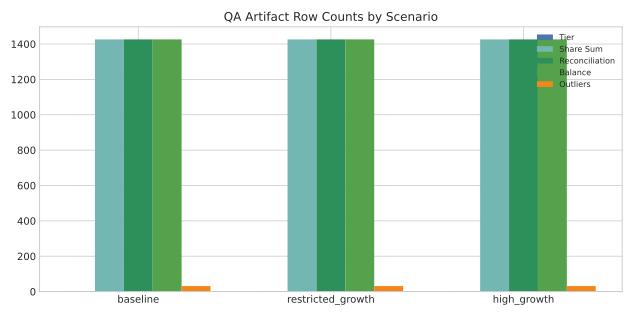
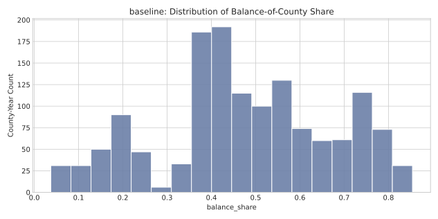
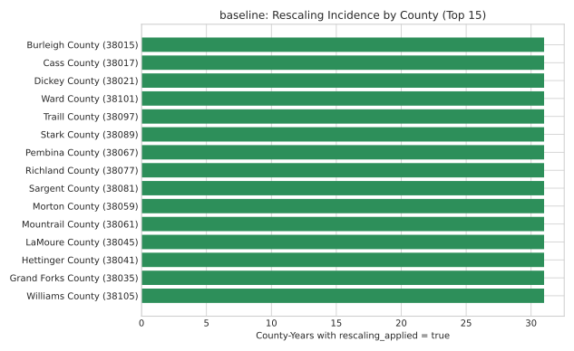
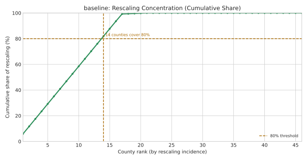
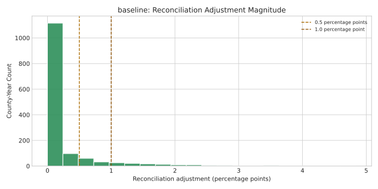
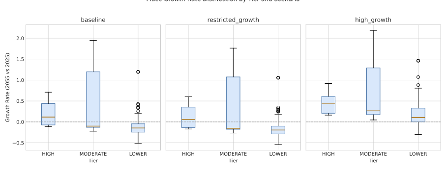
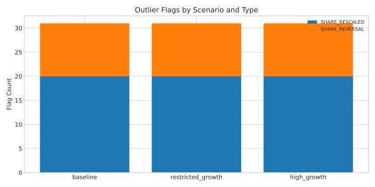
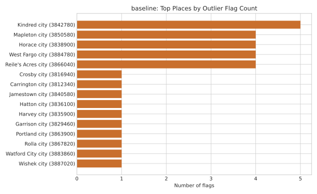
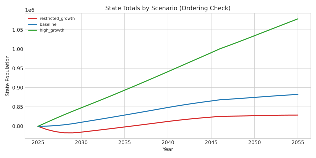
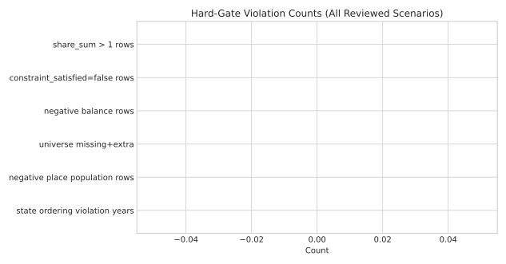

Scope: IMP-12 (QA artifacts) and IMP-13 (constraint enforcement) for place projections.
Version: 20260301_121208 | Generated: 2026-03-01 12:12:08 CST (local), 2026-03-01 18:12:08 UTC (UTC)
Review model: one tab per quality gate/issue, including already-passing gates.
What each tab includes: objective, what to check, relevant visual(s), summary stats, and agent recommendation.
Version: 20260301_121208 | Generated: 2026-03-01 12:12:08 CST (local), 2026-03-01 18:12:08 UTC (UTC)
What we are checking: Confirm all required QA outputs are present for every scenario with expected structural row patterns.
Agent analysis: All scenarios include the required QA artifacts (including reconciliation magnitude) and expected row shapes. No structural completeness concerns were detected.
Suggested decision: Approve
Reviewer decision: [ ] Approve [ ] Approve with notes [ ] Request change
| Scenario | tier rows | share-sum rows | reconciliation rows | balance rows | outlier rows |
|---|---|---|---|---|---|
| baseline | 3 | 1,426 | 1,426 | 1,426 | 31 |
| restricted_growth | 3 | 1,426 | 1,426 | 1,426 | 31 |
| high_growth | 3 | 1,426 | 1,426 | 1,426 | 31 |

What this shows: Grouped bars show row counts for tier summary, share-sum validation, reconciliation magnitude, balance-of-county, and outlier-flag artifacts in each scenario.
How to interpret: Bar heights should be structurally comparable across scenarios. Missing bars or large unexpected differences indicate upstream artifact completeness issues.
Decision rule: Approve only if each scenario has all required QA artifacts present with expected structural row patterns.
Why this rule: Downstream quality checks are only credible when the full QA artifact set exists; missing or malformed artifacts can hide defects rather than reveal them.
Click chart to expand full-screen. Use Prev/Next or ←/→ keys in full-screen mode.
What we are checking: Check that county totals remain internally consistent and balance-of-county is non-negative.
Agent analysis: No negative balance-of-county rows were observed, supporting place<=county consistency.
Suggested decision: Approve
Reviewer decision: [ ] Approve [ ] Approve with notes [ ] Request change
| Scenario | Min balance_of_county_share | Negative balance rows |
|---|---|---|
| baseline | 0.037326 | 0 |
| restricted_growth | 0.037326 | 0 |
| high_growth | 0.037326 | 0 |

What this shows: Histogram of county-year balance share values, representing the residual share not assigned to incorporated places.
How to interpret: Values should remain non-negative and within a plausible range. Heaping at extremes or unexpected shape shifts may warrant county-level follow-up.
Decision rule: Approve only if balance shares are non-negative and distribution shape has no unexplained extreme concentration.
Why this rule: Balance share is the residual county component; negative values are invalid and extreme heaping can indicate upstream allocation issues.
Click chart to expand full-screen. Use Prev/Next or ←/→ keys in full-screen mode.
What we are checking: Review where and how often share reconciliation/rescaling occurs, and assess plausibility and adjustment magnitude.
Agent analysis: Rescaling is concentrated in a subset of counties, and adjustment magnitudes are summarized to separate small routine reconciliation from large corrective events. Human review should confirm both location and magnitude patterns match substantive expectations.
Suggested decision: Approve with notes
Reviewer decision: [ ] Approve [ ] Approve with notes [ ] Request change
| Metric | Value |
|---|---|
| Focal scenario | baseline |
| County-years evaluated | 1,426 |
| County-years with rescaling_applied=true | 530 (37.2%) |
| Counties evaluated | 46 |
| Counties with any rescaling | 21 (45.7%) |
| Share of rescaling in top 5 counties | 29.2% |
| Share of rescaling in top 10 counties | 58.5% |
| Counties needed to reach 80% of rescaling | 14 |
| Metric | Value |
|---|---|
| County-years in reconciliation artifact | 1,426 |
| Mean adjustment | 0.254 pp |
| Median adjustment | 0.000 pp |
| 95th percentile adjustment | 1.499 pp |
| Max adjustment | 4.841 pp |
| Rows >= 0.5 pp | 212 |
| Rows >= 1.0 pp | 118 |
| Rows flagged by threshold | 0 |
| Rank | County | County FIPS | Year | Total before | Adjustment | Flag threshold | Flagged |
|---|---|---|---|---|---|---|---|
| 1 | Cass County | 38017 | 2055 | 1.048411 | 0.048411 | 0.0500 | false |
| 2 | Cass County | 38017 | 2054 | 1.045803 | 0.045803 | 0.0500 | false |
| 3 | Mountrail County | 38061 | 2055 | 1.043870 | 0.043870 | 0.0500 | false |
| 4 | Cass County | 38017 | 2053 | 1.043274 | 0.043274 | 0.0500 | false |
| 5 | Mountrail County | 38061 | 2054 | 1.041863 | 0.041863 | 0.0500 | false |
| 6 | Cass County | 38017 | 2052 | 1.040822 | 0.040822 | 0.0500 | false |
| 7 | Mountrail County | 38061 | 2053 | 1.039895 | 0.039895 | 0.0500 | false |
| 8 | Cass County | 38017 | 2051 | 1.038447 | 0.038447 | 0.0500 | false |
| 9 | Mountrail County | 38061 | 2052 | 1.037965 | 0.037965 | 0.0500 | false |
| 10 | Cass County | 38017 | 2050 | 1.036148 | 0.036148 | 0.0500 | false |
| 11 | Mountrail County | 38061 | 2051 | 1.036074 | 0.036074 | 0.0500 | false |
| 12 | Mountrail County | 38061 | 2050 | 1.034222 | 0.034222 | 0.0500 | false |
| 13 | Cass County | 38017 | 2049 | 1.033925 | 0.033925 | 0.0500 | false |
| 14 | Mountrail County | 38061 | 2049 | 1.032409 | 0.032409 | 0.0500 | false |
| 15 | Cass County | 38017 | 2048 | 1.031776 | 0.031776 | 0.0500 | false |
| 16 | Mountrail County | 38061 | 2048 | 1.030637 | 0.030637 | 0.0500 | false |
| 17 | Cass County | 38017 | 2047 | 1.029701 | 0.029701 | 0.0500 | false |
| 18 | Mountrail County | 38061 | 2047 | 1.028906 | 0.028906 | 0.0500 | false |
| 19 | Sargent County | 38081 | 2055 | 1.027852 | 0.027852 | 0.0500 | false |
| 20 | Cass County | 38017 | 2046 | 1.027700 | 0.027700 | 0.0500 | false |
| 21 | Mountrail County | 38061 | 2046 | 1.027216 | 0.027216 | 0.0500 | false |
| 22 | Sargent County | 38081 | 2054 | 1.026516 | 0.026516 | 0.0500 | false |
| 23 | Hettinger County | 38041 | 2055 | 1.026024 | 0.026024 | 0.0500 | false |
| 24 | Cass County | 38017 | 2045 | 1.025771 | 0.025771 | 0.0500 | false |
| 25 | Mountrail County | 38061 | 2045 | 1.025567 | 0.025567 | 0.0500 | false |
| Rank | County | County FIPS | Rescaling years | Rescaling rate | % of all rescaling | Cumulative % |
|---|---|---|---|---|---|---|
| 1 | Burleigh County | 38015 | 31 | 100.0% | 5.8% | 5.8% |
| 2 | Cass County | 38017 | 31 | 100.0% | 5.8% | 11.7% |
| 3 | Dickey County | 38021 | 31 | 100.0% | 5.8% | 17.5% |
| 4 | Grand Forks County | 38035 | 31 | 100.0% | 5.8% | 23.4% |
| 5 | Hettinger County | 38041 | 31 | 100.0% | 5.8% | 29.2% |
| 6 | LaMoure County | 38045 | 31 | 100.0% | 5.8% | 35.1% |
| 7 | Morton County | 38059 | 31 | 100.0% | 5.8% | 40.9% |
| 8 | Mountrail County | 38061 | 31 | 100.0% | 5.8% | 46.8% |
| 9 | Pembina County | 38067 | 31 | 100.0% | 5.8% | 52.6% |
| 10 | Richland County | 38077 | 31 | 100.0% | 5.8% | 58.5% |
| 11 | Sargent County | 38081 | 31 | 100.0% | 5.8% | 64.3% |
| 12 | Stark County | 38089 | 31 | 100.0% | 5.8% | 70.2% |
| 13 | Traill County | 38097 | 31 | 100.0% | 5.8% | 76.0% |
| 14 | Walsh County | 38099 | 31 | 100.0% | 5.8% | 81.9% |
| 15 | Ward County | 38101 | 31 | 100.0% | 5.8% | 87.7% |
| 16 | Williams County | 38105 | 31 | 100.0% | 5.8% | 93.6% |
| 17 | Rolette County | 38079 | 30 | 96.8% | 5.7% | 99.2% |
| 18 | McIntosh County | 38051 | 1 | 3.2% | 0.2% | 99.4% |
| 19 | McLean County | 38055 | 1 | 3.2% | 0.2% | 99.6% |
| 20 | Mercer County | 38057 | 1 | 3.2% | 0.2% | 99.8% |
| 21 | Ransom County | 38073 | 1 | 3.2% | 0.2% | 100.0% |
| 22 | Adams County | 38001 | 0 | 0.0% | 0.0% | 100.0% |
| 23 | Barnes County | 38003 | 0 | 0.0% | 0.0% | 100.0% |
| 24 | Bottineau County | 38009 | 0 | 0.0% | 0.0% | 100.0% |
| 25 | Bowman County | 38011 | 0 | 0.0% | 0.0% | 100.0% |
| 26 | Cavalier County | 38019 | 0 | 0.0% | 0.0% | 100.0% |
| 27 | Divide County | 38023 | 0 | 0.0% | 0.0% | 100.0% |
| 28 | Dunn County | 38025 | 0 | 0.0% | 0.0% | 100.0% |
| 29 | Eddy County | 38027 | 0 | 0.0% | 0.0% | 100.0% |
| 30 | Emmons County | 38029 | 0 | 0.0% | 0.0% | 100.0% |
| 31 | Foster County | 38031 | 0 | 0.0% | 0.0% | 100.0% |
| 32 | Golden Valley County | 38033 | 0 | 0.0% | 0.0% | 100.0% |
| 33 | Grant County | 38037 | 0 | 0.0% | 0.0% | 100.0% |
| 34 | Griggs County | 38039 | 0 | 0.0% | 0.0% | 100.0% |
| 35 | Kidder County | 38043 | 0 | 0.0% | 0.0% | 100.0% |
| 36 | Logan County | 38047 | 0 | 0.0% | 0.0% | 100.0% |
| 37 | McHenry County | 38049 | 0 | 0.0% | 0.0% | 100.0% |
| 38 | McKenzie County | 38053 | 0 | 0.0% | 0.0% | 100.0% |
| 39 | Nelson County | 38063 | 0 | 0.0% | 0.0% | 100.0% |
| 40 | Oliver County | 38065 | 0 | 0.0% | 0.0% | 100.0% |
| 41 | Pierce County | 38069 | 0 | 0.0% | 0.0% | 100.0% |
| 42 | Ramsey County | 38071 | 0 | 0.0% | 0.0% | 100.0% |
| 43 | Renville County | 38075 | 0 | 0.0% | 0.0% | 100.0% |
| 44 | Stutsman County | 38093 | 0 | 0.0% | 0.0% | 100.0% |
| 45 | Towner County | 38095 | 0 | 0.0% | 0.0% | 100.0% |
| 46 | Wells County | 38103 | 0 | 0.0% | 0.0% | 100.0% |
| County | County FIPS | Year | sum_place_shares | balance_of_county_share |
|---|---|---|---|---|
| Burleigh County | 38015 | 2025 | 0.796719 | 0.203281 |
| Burleigh County | 38015 | 2026 | 0.796549 | 0.203451 |
| Burleigh County | 38015 | 2027 | 0.796549 | 0.203451 |
| Burleigh County | 38015 | 2028 | 0.796549 | 0.203451 |
| Burleigh County | 38015 | 2029 | 0.796549 | 0.203451 |
| Burleigh County | 38015 | 2030 | 0.796549 | 0.203451 |
| Burleigh County | 38015 | 2031 | 0.796529 | 0.203471 |
| Burleigh County | 38015 | 2032 | 0.796478 | 0.203522 |
| Burleigh County | 38015 | 2033 | 0.796446 | 0.203554 |
| Burleigh County | 38015 | 2034 | 0.796432 | 0.203568 |
| Burleigh County | 38015 | 2035 | 0.796438 | 0.203562 |
| Burleigh County | 38015 | 2036 | 0.796463 | 0.203537 |
| Burleigh County | 38015 | 2037 | 0.796508 | 0.203492 |
| Burleigh County | 38015 | 2038 | 0.796549 | 0.203451 |
| Burleigh County | 38015 | 2039 | 0.796549 | 0.203451 |
| Burleigh County | 38015 | 2040 | 0.796549 | 0.203451 |
| Burleigh County | 38015 | 2041 | 0.796549 | 0.203451 |
| Burleigh County | 38015 | 2042 | 0.796549 | 0.203451 |
| Burleigh County | 38015 | 2043 | 0.796549 | 0.203451 |
| Burleigh County | 38015 | 2044 | 0.796549 | 0.203451 |
| Burleigh County | 38015 | 2045 | 0.796549 | 0.203451 |
| Burleigh County | 38015 | 2046 | 0.796549 | 0.203451 |
| Burleigh County | 38015 | 2047 | 0.796549 | 0.203451 |
| Burleigh County | 38015 | 2048 | 0.796549 | 0.203451 |
| Burleigh County | 38015 | 2049 | 0.796549 | 0.203451 |
| Burleigh County | 38015 | 2050 | 0.796549 | 0.203451 |
| Burleigh County | 38015 | 2051 | 0.796549 | 0.203451 |
| Burleigh County | 38015 | 2052 | 0.796549 | 0.203451 |
| Burleigh County | 38015 | 2053 | 0.796549 | 0.203451 |
| Burleigh County | 38015 | 2054 | 0.796549 | 0.203451 |
| Burleigh County | 38015 | 2055 | 0.796549 | 0.203451 |
| Cass County | 38017 | 2025 | 0.947943 | 0.052057 |
| Cass County | 38017 | 2026 | 0.948447 | 0.051553 |
| Cass County | 38017 | 2027 | 0.949014 | 0.050986 |
| Cass County | 38017 | 2028 | 0.949574 | 0.050426 |
| Cass County | 38017 | 2029 | 0.950129 | 0.049871 |
| Cass County | 38017 | 2030 | 0.950678 | 0.049322 |
| Cass County | 38017 | 2031 | 0.951222 | 0.048778 |
| Cass County | 38017 | 2032 | 0.951759 | 0.048241 |
| Cass County | 38017 | 2033 | 0.952291 | 0.047709 |
| Cass County | 38017 | 2034 | 0.952818 | 0.047182 |
| Cass County | 38017 | 2035 | 0.953339 | 0.046661 |
| Cass County | 38017 | 2036 | 0.953854 | 0.046146 |
| Cass County | 38017 | 2037 | 0.954364 | 0.045636 |
| Cass County | 38017 | 2038 | 0.954869 | 0.045131 |
| Cass County | 38017 | 2039 | 0.955368 | 0.044632 |
| Cass County | 38017 | 2040 | 0.955862 | 0.044138 |
| Cass County | 38017 | 2041 | 0.956351 | 0.043649 |
| Cass County | 38017 | 2042 | 0.956835 | 0.043165 |
| Cass County | 38017 | 2043 | 0.957313 | 0.042687 |
| Cass County | 38017 | 2044 | 0.957787 | 0.042213 |
| Cass County | 38017 | 2045 | 0.958255 | 0.041745 |
| Cass County | 38017 | 2046 | 0.958719 | 0.041281 |
| Cass County | 38017 | 2047 | 0.959177 | 0.040823 |
| Cass County | 38017 | 2048 | 0.959631 | 0.040369 |
| Cass County | 38017 | 2049 | 0.960080 | 0.039920 |
| Cass County | 38017 | 2050 | 0.960524 | 0.039476 |
| Cass County | 38017 | 2051 | 0.960963 | 0.039037 |
| Cass County | 38017 | 2052 | 0.961398 | 0.038602 |
| Cass County | 38017 | 2053 | 0.961828 | 0.038172 |
| Cass County | 38017 | 2054 | 0.962253 | 0.037747 |
| Cass County | 38017 | 2055 | 0.962674 | 0.037326 |
| Dickey County | 38021 | 2025 | 0.590930 | 0.409070 |
| Dickey County | 38021 | 2026 | 0.589445 | 0.410555 |
| Dickey County | 38021 | 2027 | 0.587905 | 0.412095 |
| Dickey County | 38021 | 2028 | 0.586372 | 0.413628 |
| Dickey County | 38021 | 2029 | 0.584846 | 0.415154 |
| Dickey County | 38021 | 2030 | 0.583327 | 0.416673 |
| Dickey County | 38021 | 2031 | 0.581816 | 0.418184 |
| Dickey County | 38021 | 2032 | 0.580312 | 0.419688 |
| Dickey County | 38021 | 2033 | 0.578815 | 0.421185 |
| Dickey County | 38021 | 2034 | 0.577326 | 0.422674 |
| Dickey County | 38021 | 2035 | 0.575844 | 0.424156 |
| Dickey County | 38021 | 2036 | 0.574369 | 0.425631 |
| Dickey County | 38021 | 2037 | 0.572903 | 0.427097 |
| Dickey County | 38021 | 2038 | 0.571443 | 0.428557 |
| Dickey County | 38021 | 2039 | 0.569992 | 0.430008 |
| Dickey County | 38021 | 2040 | 0.568548 | 0.431452 |
| Dickey County | 38021 | 2041 | 0.567111 | 0.432889 |
| Dickey County | 38021 | 2042 | 0.565682 | 0.434318 |
| Dickey County | 38021 | 2043 | 0.564261 | 0.435739 |
| Dickey County | 38021 | 2044 | 0.562848 | 0.437152 |
| Dickey County | 38021 | 2045 | 0.561443 | 0.438557 |
| Dickey County | 38021 | 2046 | 0.560045 | 0.439955 |
| Dickey County | 38021 | 2047 | 0.558655 | 0.441345 |
| Dickey County | 38021 | 2048 | 0.557273 | 0.442727 |
| Dickey County | 38021 | 2049 | 0.555898 | 0.444102 |
| Dickey County | 38021 | 2050 | 0.554532 | 0.445468 |
| Dickey County | 38021 | 2051 | 0.553173 | 0.446827 |
| Dickey County | 38021 | 2052 | 0.551823 | 0.448177 |
| Dickey County | 38021 | 2053 | 0.550480 | 0.449520 |
| Dickey County | 38021 | 2054 | 0.549145 | 0.450855 |
| Dickey County | 38021 | 2055 | 0.547818 | 0.452182 |
| Grand Forks County | 38035 | 2025 | 0.872677 | 0.127323 |
| Grand Forks County | 38035 | 2026 | 0.874120 | 0.125880 |
| Grand Forks County | 38035 | 2027 | 0.875529 | 0.124471 |
| Grand Forks County | 38035 | 2028 | 0.876925 | 0.123075 |
| Grand Forks County | 38035 | 2029 | 0.878308 | 0.121692 |
| Grand Forks County | 38035 | 2030 | 0.879677 | 0.120323 |
| Grand Forks County | 38035 | 2031 | 0.881032 | 0.118968 |
| Grand Forks County | 38035 | 2032 | 0.882375 | 0.117625 |
| Grand Forks County | 38035 | 2033 | 0.883704 | 0.116296 |
| Grand Forks County | 38035 | 2034 | 0.885021 | 0.114979 |
| Grand Forks County | 38035 | 2035 | 0.886324 | 0.113676 |
| Grand Forks County | 38035 | 2036 | 0.887614 | 0.112386 |
| Grand Forks County | 38035 | 2037 | 0.888892 | 0.111108 |
| Grand Forks County | 38035 | 2038 | 0.890157 | 0.109843 |
| Grand Forks County | 38035 | 2039 | 0.891409 | 0.108591 |
| Grand Forks County | 38035 | 2040 | 0.892649 | 0.107351 |
| Grand Forks County | 38035 | 2041 | 0.893876 | 0.106124 |
| Grand Forks County | 38035 | 2042 | 0.895091 | 0.104909 |
| Grand Forks County | 38035 | 2043 | 0.896293 | 0.103707 |
| Grand Forks County | 38035 | 2044 | 0.897484 | 0.102516 |
| Grand Forks County | 38035 | 2045 | 0.898662 | 0.101338 |
| Grand Forks County | 38035 | 2046 | 0.899828 | 0.100172 |
| Grand Forks County | 38035 | 2047 | 0.900982 | 0.099018 |
| Grand Forks County | 38035 | 2048 | 0.902125 | 0.097875 |
| Grand Forks County | 38035 | 2049 | 0.903256 | 0.096744 |
| Grand Forks County | 38035 | 2050 | 0.904374 | 0.095626 |
| Grand Forks County | 38035 | 2051 | 0.905482 | 0.094518 |
| Grand Forks County | 38035 | 2052 | 0.906578 | 0.093422 |
| Grand Forks County | 38035 | 2053 | 0.907662 | 0.092338 |
| Grand Forks County | 38035 | 2054 | 0.908735 | 0.091265 |
| Grand Forks County | 38035 | 2055 | 0.909797 | 0.090203 |
| Hettinger County | 38041 | 2025 | 0.550761 | 0.449239 |
| Hettinger County | 38041 | 2026 | 0.550676 | 0.449324 |
| Hettinger County | 38041 | 2027 | 0.551198 | 0.448802 |
| Hettinger County | 38041 | 2028 | 0.551720 | 0.448280 |
| Hettinger County | 38041 | 2029 | 0.552241 | 0.447759 |
| Hettinger County | 38041 | 2030 | 0.552763 | 0.447237 |
| Hettinger County | 38041 | 2031 | 0.553284 | 0.446716 |
| Hettinger County | 38041 | 2032 | 0.553806 | 0.446194 |
| Hettinger County | 38041 | 2033 | 0.554327 | 0.445673 |
| Hettinger County | 38041 | 2034 | 0.554848 | 0.445152 |
| Hettinger County | 38041 | 2035 | 0.555369 | 0.444631 |
| Hettinger County | 38041 | 2036 | 0.555890 | 0.444110 |
| Hettinger County | 38041 | 2037 | 0.556410 | 0.443590 |
| Hettinger County | 38041 | 2038 | 0.556931 | 0.443069 |
| Hettinger County | 38041 | 2039 | 0.557451 | 0.442549 |
| Hettinger County | 38041 | 2040 | 0.557972 | 0.442028 |
| Hettinger County | 38041 | 2041 | 0.558492 | 0.441508 |
| Hettinger County | 38041 | 2042 | 0.559012 | 0.440988 |
| Hettinger County | 38041 | 2043 | 0.559532 | 0.440468 |
| Hettinger County | 38041 | 2044 | 0.560052 | 0.439948 |
| Hettinger County | 38041 | 2045 | 0.560572 | 0.439428 |
| Hettinger County | 38041 | 2046 | 0.561091 | 0.438909 |
| Hettinger County | 38041 | 2047 | 0.561611 | 0.438389 |
| Hettinger County | 38041 | 2048 | 0.562130 | 0.437870 |
| Hettinger County | 38041 | 2049 | 0.562649 | 0.437351 |
| Hettinger County | 38041 | 2050 | 0.563168 | 0.436832 |
| Hettinger County | 38041 | 2051 | 0.563687 | 0.436313 |
| Hettinger County | 38041 | 2052 | 0.564206 | 0.435794 |
| Hettinger County | 38041 | 2053 | 0.564724 | 0.435276 |
| Hettinger County | 38041 | 2054 | 0.565243 | 0.434757 |
| Hettinger County | 38041 | 2055 | 0.565761 | 0.434239 |
| LaMoure County | 38045 | 2025 | 0.322315 | 0.677685 |
| LaMoure County | 38045 | 2026 | 0.320638 | 0.679362 |
| LaMoure County | 38045 | 2027 | 0.318945 | 0.681055 |
| LaMoure County | 38045 | 2028 | 0.317264 | 0.682736 |
| LaMoure County | 38045 | 2029 | 0.315594 | 0.684406 |
| LaMoure County | 38045 | 2030 | 0.313938 | 0.686062 |
| LaMoure County | 38045 | 2031 | 0.312293 | 0.687707 |
| LaMoure County | 38045 | 2032 | 0.310660 | 0.689340 |
| LaMoure County | 38045 | 2033 | 0.309040 | 0.690960 |
| LaMoure County | 38045 | 2034 | 0.307432 | 0.692568 |
| LaMoure County | 38045 | 2035 | 0.305835 | 0.694165 |
| LaMoure County | 38045 | 2036 | 0.304251 | 0.695749 |
| LaMoure County | 38045 | 2037 | 0.302679 | 0.697321 |
| LaMoure County | 38045 | 2038 | 0.301119 | 0.698881 |
| LaMoure County | 38045 | 2039 | 0.299571 | 0.700429 |
| LaMoure County | 38045 | 2040 | 0.298035 | 0.701965 |
| LaMoure County | 38045 | 2041 | 0.296511 | 0.703489 |
| LaMoure County | 38045 | 2042 | 0.294998 | 0.705002 |
| LaMoure County | 38045 | 2043 | 0.293498 | 0.706502 |
| LaMoure County | 38045 | 2044 | 0.292009 | 0.707991 |
| LaMoure County | 38045 | 2045 | 0.290533 | 0.709467 |
| LaMoure County | 38045 | 2046 | 0.289068 | 0.710932 |
| LaMoure County | 38045 | 2047 | 0.287614 | 0.712386 |
| LaMoure County | 38045 | 2048 | 0.286173 | 0.713827 |
| LaMoure County | 38045 | 2049 | 0.284743 | 0.715257 |
| LaMoure County | 38045 | 2050 | 0.283325 | 0.716675 |
| LaMoure County | 38045 | 2051 | 0.281918 | 0.718082 |
| LaMoure County | 38045 | 2052 | 0.280523 | 0.719477 |
| LaMoure County | 38045 | 2053 | 0.279139 | 0.720861 |
| LaMoure County | 38045 | 2054 | 0.277766 | 0.722234 |
| LaMoure County | 38045 | 2055 | 0.276406 | 0.723594 |
| McIntosh County | 38051 | 2025 | 0.574791 | 0.425209 |
| McLean County | 38055 | 2025 | 0.478733 | 0.521267 |
| Mercer County | 38057 | 2025 | 0.636084 | 0.363916 |
| Morton County | 38059 | 2025 | 0.817575 | 0.182425 |
| Morton County | 38059 | 2026 | 0.818963 | 0.181037 |
| Morton County | 38059 | 2027 | 0.820363 | 0.179637 |
| Morton County | 38059 | 2028 | 0.821756 | 0.178244 |
| Morton County | 38059 | 2029 | 0.823139 | 0.176861 |
| Morton County | 38059 | 2030 | 0.824515 | 0.175485 |
| Morton County | 38059 | 2031 | 0.825882 | 0.174118 |
| Morton County | 38059 | 2032 | 0.827240 | 0.172760 |
| Morton County | 38059 | 2033 | 0.828590 | 0.171410 |
| Morton County | 38059 | 2034 | 0.829932 | 0.170068 |
| Morton County | 38059 | 2035 | 0.831265 | 0.168735 |
| Morton County | 38059 | 2036 | 0.832590 | 0.167410 |
| Morton County | 38059 | 2037 | 0.833907 | 0.166093 |
| Morton County | 38059 | 2038 | 0.835215 | 0.164785 |
| Morton County | 38059 | 2039 | 0.836515 | 0.163485 |
| Morton County | 38059 | 2040 | 0.837807 | 0.162193 |
| Morton County | 38059 | 2041 | 0.839091 | 0.160909 |
| Morton County | 38059 | 2042 | 0.840366 | 0.159634 |
| Morton County | 38059 | 2043 | 0.841633 | 0.158367 |
| Morton County | 38059 | 2044 | 0.842892 | 0.157108 |
| Morton County | 38059 | 2045 | 0.844143 | 0.155857 |
| Morton County | 38059 | 2046 | 0.845386 | 0.154614 |
| Morton County | 38059 | 2047 | 0.846620 | 0.153380 |
| Morton County | 38059 | 2048 | 0.847847 | 0.152153 |
| Morton County | 38059 | 2049 | 0.849065 | 0.150935 |
| Morton County | 38059 | 2050 | 0.850276 | 0.149724 |
| Morton County | 38059 | 2051 | 0.851478 | 0.148522 |
| Morton County | 38059 | 2052 | 0.852672 | 0.147328 |
| Morton County | 38059 | 2053 | 0.853859 | 0.146141 |
| Morton County | 38059 | 2054 | 0.855037 | 0.144963 |
| Morton County | 38059 | 2055 | 0.856208 | 0.143792 |
| Mountrail County | 38061 | 2025 | 0.613218 | 0.386782 |
| Mountrail County | 38061 | 2026 | 0.613680 | 0.386320 |
| Mountrail County | 38061 | 2027 | 0.614954 | 0.385046 |
| Mountrail County | 38061 | 2028 | 0.616228 | 0.383772 |
| Mountrail County | 38061 | 2029 | 0.617499 | 0.382501 |
| Mountrail County | 38061 | 2030 | 0.618769 | 0.381231 |
| Mountrail County | 38061 | 2031 | 0.620037 | 0.379963 |
| Mountrail County | 38061 | 2032 | 0.621304 | 0.378696 |
| Mountrail County | 38061 | 2033 | 0.622569 | 0.377431 |
| Mountrail County | 38061 | 2034 | 0.623832 | 0.376168 |
| Mountrail County | 38061 | 2035 | 0.625094 | 0.374906 |
| Mountrail County | 38061 | 2036 | 0.626354 | 0.373646 |
| Mountrail County | 38061 | 2037 | 0.627612 | 0.372388 |
| Mountrail County | 38061 | 2038 | 0.628869 | 0.371131 |
| Mountrail County | 38061 | 2039 | 0.630124 | 0.369876 |
| Mountrail County | 38061 | 2040 | 0.631377 | 0.368623 |
| Mountrail County | 38061 | 2041 | 0.632628 | 0.367372 |
| Mountrail County | 38061 | 2042 | 0.633877 | 0.366123 |
| Mountrail County | 38061 | 2043 | 0.635125 | 0.364875 |
| Mountrail County | 38061 | 2044 | 0.636371 | 0.363629 |
| Mountrail County | 38061 | 2045 | 0.637615 | 0.362385 |
| Mountrail County | 38061 | 2046 | 0.638857 | 0.361143 |
| Mountrail County | 38061 | 2047 | 0.640098 | 0.359902 |
| Mountrail County | 38061 | 2048 | 0.641336 | 0.358664 |
| Mountrail County | 38061 | 2049 | 0.642573 | 0.357427 |
| Mountrail County | 38061 | 2050 | 0.643807 | 0.356193 |
| Mountrail County | 38061 | 2051 | 0.645040 | 0.354960 |
| Mountrail County | 38061 | 2052 | 0.646271 | 0.353729 |
| Mountrail County | 38061 | 2053 | 0.647500 | 0.352500 |
| Mountrail County | 38061 | 2054 | 0.648727 | 0.351273 |
| Mountrail County | 38061 | 2055 | 0.649952 | 0.350048 |
| Pembina County | 38067 | 2025 | 0.429175 | 0.570825 |
| Pembina County | 38067 | 2026 | 0.429550 | 0.570450 |
| Pembina County | 38067 | 2027 | 0.429938 | 0.570062 |
| Pembina County | 38067 | 2028 | 0.430326 | 0.569674 |
| Pembina County | 38067 | 2029 | 0.430714 | 0.569286 |
| Pembina County | 38067 | 2030 | 0.431102 | 0.568898 |
| Pembina County | 38067 | 2031 | 0.431490 | 0.568510 |
| Pembina County | 38067 | 2032 | 0.431878 | 0.568122 |
| Pembina County | 38067 | 2033 | 0.432267 | 0.567733 |
| Pembina County | 38067 | 2034 | 0.432655 | 0.567345 |
| Pembina County | 38067 | 2035 | 0.433044 | 0.566956 |
| Pembina County | 38067 | 2036 | 0.433432 | 0.566568 |
| Pembina County | 38067 | 2037 | 0.433821 | 0.566179 |
| Pembina County | 38067 | 2038 | 0.434209 | 0.565791 |
| Pembina County | 38067 | 2039 | 0.434598 | 0.565402 |
| Pembina County | 38067 | 2040 | 0.434987 | 0.565013 |
| Pembina County | 38067 | 2041 | 0.435376 | 0.564624 |
| Pembina County | 38067 | 2042 | 0.435765 | 0.564235 |
| Pembina County | 38067 | 2043 | 0.436154 | 0.563846 |
| Pembina County | 38067 | 2044 | 0.436544 | 0.563456 |
| Pembina County | 38067 | 2045 | 0.436933 | 0.563067 |
| Pembina County | 38067 | 2046 | 0.437322 | 0.562678 |
| Pembina County | 38067 | 2047 | 0.437712 | 0.562288 |
| Pembina County | 38067 | 2048 | 0.438101 | 0.561899 |
| Pembina County | 38067 | 2049 | 0.438491 | 0.561509 |
| Pembina County | 38067 | 2050 | 0.438880 | 0.561120 |
| Pembina County | 38067 | 2051 | 0.439270 | 0.560730 |
| Pembina County | 38067 | 2052 | 0.439660 | 0.560340 |
| Pembina County | 38067 | 2053 | 0.440050 | 0.559950 |
| Pembina County | 38067 | 2054 | 0.440440 | 0.559560 |
| Pembina County | 38067 | 2055 | 0.440830 | 0.559170 |
| Ransom County | 38073 | 2025 | 0.550015 | 0.449985 |
| Richland County | 38077 | 2025 | 0.578104 | 0.421896 |
| Richland County | 38077 | 2026 | 0.577925 | 0.422075 |
| Richland County | 38077 | 2027 | 0.577744 | 0.422256 |
| Richland County | 38077 | 2028 | 0.577564 | 0.422436 |
| Richland County | 38077 | 2029 | 0.577385 | 0.422615 |
| Richland County | 38077 | 2030 | 0.577208 | 0.422792 |
| Richland County | 38077 | 2031 | 0.577031 | 0.422969 |
| Richland County | 38077 | 2032 | 0.576857 | 0.423143 |
| Richland County | 38077 | 2033 | 0.576683 | 0.423317 |
| Richland County | 38077 | 2034 | 0.576511 | 0.423489 |
| Richland County | 38077 | 2035 | 0.576340 | 0.423660 |
| Richland County | 38077 | 2036 | 0.576170 | 0.423830 |
| Richland County | 38077 | 2037 | 0.576001 | 0.423999 |
| Richland County | 38077 | 2038 | 0.575834 | 0.424166 |
| Richland County | 38077 | 2039 | 0.575668 | 0.424332 |
| Richland County | 38077 | 2040 | 0.575503 | 0.424497 |
| Richland County | 38077 | 2041 | 0.575339 | 0.424661 |
| Richland County | 38077 | 2042 | 0.575176 | 0.424824 |
| Richland County | 38077 | 2043 | 0.575015 | 0.424985 |
| Richland County | 38077 | 2044 | 0.574855 | 0.425145 |
| Richland County | 38077 | 2045 | 0.574696 | 0.425304 |
| Richland County | 38077 | 2046 | 0.574538 | 0.425462 |
| Richland County | 38077 | 2047 | 0.574381 | 0.425619 |
| Richland County | 38077 | 2048 | 0.574225 | 0.425775 |
| Richland County | 38077 | 2049 | 0.574071 | 0.425929 |
| Richland County | 38077 | 2050 | 0.573918 | 0.426082 |
| Richland County | 38077 | 2051 | 0.573765 | 0.426235 |
| Richland County | 38077 | 2052 | 0.573614 | 0.426386 |
| Richland County | 38077 | 2053 | 0.573464 | 0.426536 |
| Richland County | 38077 | 2054 | 0.573315 | 0.426685 |
| Richland County | 38077 | 2055 | 0.573167 | 0.426833 |
| Rolette County | 38079 | 2026 | 0.145879 | 0.854121 |
| Rolette County | 38079 | 2027 | 0.145928 | 0.854072 |
| Rolette County | 38079 | 2028 | 0.145978 | 0.854022 |
| Rolette County | 38079 | 2029 | 0.146027 | 0.853973 |
| Rolette County | 38079 | 2030 | 0.146077 | 0.853923 |
| Rolette County | 38079 | 2031 | 0.146126 | 0.853874 |
| Rolette County | 38079 | 2032 | 0.146176 | 0.853824 |
| Rolette County | 38079 | 2033 | 0.146225 | 0.853775 |
| Rolette County | 38079 | 2034 | 0.146275 | 0.853725 |
| Rolette County | 38079 | 2035 | 0.146325 | 0.853675 |
| Rolette County | 38079 | 2036 | 0.146374 | 0.853626 |
| Rolette County | 38079 | 2037 | 0.146424 | 0.853576 |
| Rolette County | 38079 | 2038 | 0.146474 | 0.853526 |
| Rolette County | 38079 | 2039 | 0.146523 | 0.853477 |
| Rolette County | 38079 | 2040 | 0.146573 | 0.853427 |
| Rolette County | 38079 | 2041 | 0.146623 | 0.853377 |
| Rolette County | 38079 | 2042 | 0.146672 | 0.853328 |
| Rolette County | 38079 | 2043 | 0.146722 | 0.853278 |
| Rolette County | 38079 | 2044 | 0.146772 | 0.853228 |
| Rolette County | 38079 | 2045 | 0.146822 | 0.853178 |
| Rolette County | 38079 | 2046 | 0.146871 | 0.853129 |
| Rolette County | 38079 | 2047 | 0.146921 | 0.853079 |
| Rolette County | 38079 | 2048 | 0.146971 | 0.853029 |
| Rolette County | 38079 | 2049 | 0.147021 | 0.852979 |
| Rolette County | 38079 | 2050 | 0.147071 | 0.852929 |
| Rolette County | 38079 | 2051 | 0.147121 | 0.852879 |
| Rolette County | 38079 | 2052 | 0.147170 | 0.852830 |
| Rolette County | 38079 | 2053 | 0.147220 | 0.852780 |
| Rolette County | 38079 | 2054 | 0.147270 | 0.852730 |
| Rolette County | 38079 | 2055 | 0.147320 | 0.852680 |
| Sargent County | 38081 | 2025 | 0.413663 | 0.586337 |
| Sargent County | 38081 | 2026 | 0.416275 | 0.583725 |
| Sargent County | 38081 | 2027 | 0.419611 | 0.580389 |
| Sargent County | 38081 | 2028 | 0.422955 | 0.577045 |
| Sargent County | 38081 | 2029 | 0.426305 | 0.573695 |
| Sargent County | 38081 | 2030 | 0.429662 | 0.570338 |
| Sargent County | 38081 | 2031 | 0.433026 | 0.566974 |
| Sargent County | 38081 | 2032 | 0.436396 | 0.563604 |
| Sargent County | 38081 | 2033 | 0.439772 | 0.560228 |
| Sargent County | 38081 | 2034 | 0.443153 | 0.556847 |
| Sargent County | 38081 | 2035 | 0.446540 | 0.553460 |
| Sargent County | 38081 | 2036 | 0.449931 | 0.550069 |
| Sargent County | 38081 | 2037 | 0.453328 | 0.546672 |
| Sargent County | 38081 | 2038 | 0.456728 | 0.543272 |
| Sargent County | 38081 | 2039 | 0.460133 | 0.539867 |
| Sargent County | 38081 | 2040 | 0.463541 | 0.536459 |
| Sargent County | 38081 | 2041 | 0.466953 | 0.533047 |
| Sargent County | 38081 | 2042 | 0.470368 | 0.529632 |
| Sargent County | 38081 | 2043 | 0.473786 | 0.526214 |
| Sargent County | 38081 | 2044 | 0.477206 | 0.522794 |
| Sargent County | 38081 | 2045 | 0.480628 | 0.519372 |
| Sargent County | 38081 | 2046 | 0.484052 | 0.515948 |
| Sargent County | 38081 | 2047 | 0.487478 | 0.512522 |
| Sargent County | 38081 | 2048 | 0.490905 | 0.509095 |
| Sargent County | 38081 | 2049 | 0.494332 | 0.505668 |
| Sargent County | 38081 | 2050 | 0.497760 | 0.502240 |
| Sargent County | 38081 | 2051 | 0.501189 | 0.498811 |
| Sargent County | 38081 | 2052 | 0.504617 | 0.495383 |
| Sargent County | 38081 | 2053 | 0.508045 | 0.491955 |
| Sargent County | 38081 | 2054 | 0.511472 | 0.488528 |
| Sargent County | 38081 | 2055 | 0.514898 | 0.485102 |
| Stark County | 38089 | 2025 | 0.824058 | 0.175942 |
| Stark County | 38089 | 2026 | 0.824677 | 0.175323 |
| Stark County | 38089 | 2027 | 0.825273 | 0.174727 |
| Stark County | 38089 | 2028 | 0.825867 | 0.174133 |
| Stark County | 38089 | 2029 | 0.826459 | 0.173541 |
| Stark County | 38089 | 2030 | 0.827050 | 0.172950 |
| Stark County | 38089 | 2031 | 0.827639 | 0.172361 |
| Stark County | 38089 | 2032 | 0.828226 | 0.171774 |
| Stark County | 38089 | 2033 | 0.828812 | 0.171188 |
| Stark County | 38089 | 2034 | 0.829397 | 0.170603 |
| Stark County | 38089 | 2035 | 0.829979 | 0.170021 |
| Stark County | 38089 | 2036 | 0.830561 | 0.169439 |
| Stark County | 38089 | 2037 | 0.831140 | 0.168860 |
| Stark County | 38089 | 2038 | 0.831718 | 0.168282 |
| Stark County | 38089 | 2039 | 0.832295 | 0.167705 |
| Stark County | 38089 | 2040 | 0.832870 | 0.167130 |
| Stark County | 38089 | 2041 | 0.833443 | 0.166557 |
| Stark County | 38089 | 2042 | 0.834015 | 0.165985 |
| Stark County | 38089 | 2043 | 0.834585 | 0.165415 |
| Stark County | 38089 | 2044 | 0.835153 | 0.164847 |
| Stark County | 38089 | 2045 | 0.835720 | 0.164280 |
| Stark County | 38089 | 2046 | 0.836286 | 0.163714 |
| Stark County | 38089 | 2047 | 0.836850 | 0.163150 |
| Stark County | 38089 | 2048 | 0.837412 | 0.162588 |
| Stark County | 38089 | 2049 | 0.837973 | 0.162027 |
| Stark County | 38089 | 2050 | 0.838532 | 0.161468 |
| Stark County | 38089 | 2051 | 0.839090 | 0.160910 |
| Stark County | 38089 | 2052 | 0.839646 | 0.160354 |
| Stark County | 38089 | 2053 | 0.840200 | 0.159800 |
| Stark County | 38089 | 2054 | 0.840753 | 0.159247 |
| Stark County | 38089 | 2055 | 0.841305 | 0.158695 |
| Traill County | 38097 | 2025 | 0.600229 | 0.399771 |
| Traill County | 38097 | 2026 | 0.600345 | 0.399655 |
| Traill County | 38097 | 2027 | 0.600518 | 0.399482 |
| Traill County | 38097 | 2028 | 0.600691 | 0.399309 |
| Traill County | 38097 | 2029 | 0.600864 | 0.399136 |
| Traill County | 38097 | 2030 | 0.601037 | 0.398963 |
| Traill County | 38097 | 2031 | 0.601210 | 0.398790 |
| Traill County | 38097 | 2032 | 0.601382 | 0.398618 |
| Traill County | 38097 | 2033 | 0.601555 | 0.398445 |
| Traill County | 38097 | 2034 | 0.601728 | 0.398272 |
| Traill County | 38097 | 2035 | 0.601901 | 0.398099 |
| Traill County | 38097 | 2036 | 0.602074 | 0.397926 |
| Traill County | 38097 | 2037 | 0.602246 | 0.397754 |
| Traill County | 38097 | 2038 | 0.602419 | 0.397581 |
| Traill County | 38097 | 2039 | 0.602592 | 0.397408 |
| Traill County | 38097 | 2040 | 0.602764 | 0.397236 |
| Traill County | 38097 | 2041 | 0.602937 | 0.397063 |
| Traill County | 38097 | 2042 | 0.603109 | 0.396891 |
| Traill County | 38097 | 2043 | 0.603282 | 0.396718 |
| Traill County | 38097 | 2044 | 0.603455 | 0.396545 |
| Traill County | 38097 | 2045 | 0.603627 | 0.396373 |
| Traill County | 38097 | 2046 | 0.603800 | 0.396200 |
| Traill County | 38097 | 2047 | 0.603972 | 0.396028 |
| Traill County | 38097 | 2048 | 0.604144 | 0.395856 |
| Traill County | 38097 | 2049 | 0.604317 | 0.395683 |
| Traill County | 38097 | 2050 | 0.604489 | 0.395511 |
| Traill County | 38097 | 2051 | 0.604662 | 0.395338 |
| Traill County | 38097 | 2052 | 0.604834 | 0.395166 |
| Traill County | 38097 | 2053 | 0.605006 | 0.394994 |
| Traill County | 38097 | 2054 | 0.605179 | 0.394821 |
| Traill County | 38097 | 2055 | 0.605351 | 0.394649 |
| Walsh County | 38099 | 2025 | 0.593011 | 0.406989 |
| Walsh County | 38099 | 2026 | 0.594202 | 0.405798 |
| Walsh County | 38099 | 2027 | 0.595467 | 0.404533 |
| Walsh County | 38099 | 2028 | 0.596731 | 0.403269 |
| Walsh County | 38099 | 2029 | 0.597994 | 0.402006 |
| Walsh County | 38099 | 2030 | 0.599255 | 0.400745 |
| Walsh County | 38099 | 2031 | 0.600515 | 0.399485 |
| Walsh County | 38099 | 2032 | 0.601773 | 0.398227 |
| Walsh County | 38099 | 2033 | 0.603030 | 0.396970 |
| Walsh County | 38099 | 2034 | 0.604286 | 0.395714 |
| Walsh County | 38099 | 2035 | 0.605541 | 0.394459 |
| Walsh County | 38099 | 2036 | 0.606794 | 0.393206 |
| Walsh County | 38099 | 2037 | 0.608046 | 0.391954 |
| Walsh County | 38099 | 2038 | 0.609296 | 0.390704 |
| Walsh County | 38099 | 2039 | 0.610545 | 0.389455 |
| Walsh County | 38099 | 2040 | 0.611792 | 0.388208 |
| Walsh County | 38099 | 2041 | 0.613038 | 0.386962 |
| Walsh County | 38099 | 2042 | 0.614283 | 0.385717 |
| Walsh County | 38099 | 2043 | 0.615526 | 0.384474 |
| Walsh County | 38099 | 2044 | 0.616767 | 0.383233 |
| Walsh County | 38099 | 2045 | 0.618007 | 0.381993 |
| Walsh County | 38099 | 2046 | 0.619245 | 0.380755 |
| Walsh County | 38099 | 2047 | 0.620482 | 0.379518 |
| Walsh County | 38099 | 2048 | 0.621718 | 0.378282 |
| Walsh County | 38099 | 2049 | 0.622951 | 0.377049 |
| Walsh County | 38099 | 2050 | 0.624183 | 0.375817 |
| Walsh County | 38099 | 2051 | 0.625414 | 0.374586 |
| Walsh County | 38099 | 2052 | 0.626643 | 0.373357 |
| Walsh County | 38099 | 2053 | 0.627870 | 0.372130 |
| Walsh County | 38099 | 2054 | 0.629096 | 0.370904 |
| Walsh County | 38099 | 2055 | 0.630320 | 0.369680 |
| Ward County | 38101 | 2025 | 0.758684 | 0.241316 |
| Ward County | 38101 | 2026 | 0.760131 | 0.239869 |
| Ward County | 38101 | 2027 | 0.761681 | 0.238319 |
| Ward County | 38101 | 2028 | 0.763224 | 0.236776 |
| Ward County | 38101 | 2029 | 0.764760 | 0.235240 |
| Ward County | 38101 | 2030 | 0.766290 | 0.233710 |
| Ward County | 38101 | 2031 | 0.767812 | 0.232188 |
| Ward County | 38101 | 2032 | 0.769327 | 0.230673 |
| Ward County | 38101 | 2033 | 0.770836 | 0.229164 |
| Ward County | 38101 | 2034 | 0.772337 | 0.227663 |
| Ward County | 38101 | 2035 | 0.773832 | 0.226168 |
| Ward County | 38101 | 2036 | 0.775319 | 0.224681 |
| Ward County | 38101 | 2037 | 0.776800 | 0.223200 |
| Ward County | 38101 | 2038 | 0.778274 | 0.221726 |
| Ward County | 38101 | 2039 | 0.779740 | 0.220260 |
| Ward County | 38101 | 2040 | 0.781200 | 0.218800 |
| Ward County | 38101 | 2041 | 0.782653 | 0.217347 |
| Ward County | 38101 | 2042 | 0.784099 | 0.215901 |
| Ward County | 38101 | 2043 | 0.785537 | 0.214463 |
| Ward County | 38101 | 2044 | 0.786969 | 0.213031 |
| Ward County | 38101 | 2045 | 0.788394 | 0.211606 |
| Ward County | 38101 | 2046 | 0.789812 | 0.210188 |
| Ward County | 38101 | 2047 | 0.791223 | 0.208777 |
| Ward County | 38101 | 2048 | 0.792626 | 0.207374 |
| Ward County | 38101 | 2049 | 0.794023 | 0.205977 |
| Ward County | 38101 | 2050 | 0.795413 | 0.204587 |
| Ward County | 38101 | 2051 | 0.796796 | 0.203204 |
| Ward County | 38101 | 2052 | 0.798172 | 0.201828 |
| Ward County | 38101 | 2053 | 0.799541 | 0.200459 |
| Ward County | 38101 | 2054 | 0.800903 | 0.199097 |
| Ward County | 38101 | 2055 | 0.802258 | 0.197742 |
| Williams County | 38105 | 2025 | 0.805101 | 0.194899 |
| Williams County | 38105 | 2026 | 0.805685 | 0.194315 |
| Williams County | 38105 | 2027 | 0.806213 | 0.193787 |
| Williams County | 38105 | 2028 | 0.806740 | 0.193260 |
| Williams County | 38105 | 2029 | 0.807266 | 0.192734 |
| Williams County | 38105 | 2030 | 0.807790 | 0.192210 |
| Williams County | 38105 | 2031 | 0.808314 | 0.191686 |
| Williams County | 38105 | 2032 | 0.808836 | 0.191164 |
| Williams County | 38105 | 2033 | 0.809357 | 0.190643 |
| Williams County | 38105 | 2034 | 0.809878 | 0.190122 |
| Williams County | 38105 | 2035 | 0.810397 | 0.189603 |
| Williams County | 38105 | 2036 | 0.810915 | 0.189085 |
| Williams County | 38105 | 2037 | 0.811432 | 0.188568 |
| Williams County | 38105 | 2038 | 0.811948 | 0.188052 |
| Williams County | 38105 | 2039 | 0.812463 | 0.187537 |
| Williams County | 38105 | 2040 | 0.812976 | 0.187024 |
| Williams County | 38105 | 2041 | 0.813489 | 0.186511 |
| Williams County | 38105 | 2042 | 0.814001 | 0.185999 |
| Williams County | 38105 | 2043 | 0.814511 | 0.185489 |
| Williams County | 38105 | 2044 | 0.815021 | 0.184979 |
| Williams County | 38105 | 2045 | 0.815529 | 0.184471 |
| Williams County | 38105 | 2046 | 0.816036 | 0.183964 |
| Williams County | 38105 | 2047 | 0.816542 | 0.183458 |
| Williams County | 38105 | 2048 | 0.817047 | 0.182953 |
| Williams County | 38105 | 2049 | 0.817551 | 0.182449 |
| Williams County | 38105 | 2050 | 0.818054 | 0.181946 |
| Williams County | 38105 | 2051 | 0.818556 | 0.181444 |
| Williams County | 38105 | 2052 | 0.819057 | 0.180943 |
| Williams County | 38105 | 2053 | 0.819557 | 0.180443 |
| Williams County | 38105 | 2054 | 0.820055 | 0.179945 |
| Williams County | 38105 | 2055 | 0.820553 | 0.179447 |

What this shows: Horizontal bars rank counties by count of county-years where share rescaling was applied.
How to interpret: Concentration in known volatile counties can be acceptable. Broad or unexpected spread across many counties may suggest overactive reconciliation.
Decision rule: Approve with notes when rescaling is concentrated in substantively plausible counties; request change if rescaling is widespread without explanation.
Why this rule: Some local volatility is expected, but broad rescaling can indicate over-correction or unstable share inputs.
Click chart to expand full-screen. Use Prev/Next or ←/→ keys in full-screen mode.

What this shows: A cumulative curve of rescaling incidence when counties are ranked from most to least rescaling-applied county-years.
How to interpret: A steep early curve indicates rescaling is concentrated in a few counties. A near-linear curve indicates rescaling is broadly distributed across counties.
Decision rule: Approve with notes when a small subset of counties explains most rescaling; request change if rescaling is diffuse across many counties without a clear substantive rationale.
Why this rule: Controlled reconciliation typically appears as localized adjustments. Broad distribution can indicate systemic share instability.
Click chart to expand full-screen. Use Prev/Next or ←/→ keys in full-screen mode.

What this shows: Histogram of county-year reconciliation adjustment magnitudes (absolute deviation corrected to enforce total share = 1.0).
How to interpret: Most mass should cluster near zero if reconciliation is routine. A heavy right tail indicates larger corrective events that merit explicit review.
Decision rule: Approve with notes when adjustment magnitudes are predominantly small and larger adjustments are sparse and explainable; request change for broad unexplained large adjustments.
Why this rule: Concentration alone does not show impact size; magnitude distribution confirms whether reconciliation is minor housekeeping or materially altering projected shares.
Click chart to expand full-screen. Use Prev/Next or ←/→ keys in full-screen mode.
What we are checking: Inspect growth distributions by tier/scenario for patterns inconsistent with expected uncertainty structure.
Agent analysis: Tier-level growth distributions show broader spread in LOWER and MODERATE tiers, as expected. Outlier tails exist and should be acknowledged in caveats, not automatically blocked.
Suggested decision: Approve with notes
Reviewer decision: [ ] Approve [ ] Approve with notes [ ] Request change
| Scenario | Tier | Count | Mean | Median | Min | Max |
|---|---|---|---|---|---|---|
| baseline | HIGH | 9 | 0.2157 | 0.1155 | -0.1149 | 0.7091 |
| baseline | MODERATE | 9 | 0.4596 | -0.1009 | -0.2224 | 1.9475 |
| baseline | LOWER | 72 | -0.0842 | -0.1457 | -0.5098 | 1.1991 |
| restricted_growth | HIGH | 9 | 0.1411 | 0.0538 | -0.1690 | 0.6004 |
| restricted_growth | MODERATE | 9 | 0.3723 | -0.1525 | -0.2657 | 1.7625 |
| restricted_growth | LOWER | 72 | -0.1377 | -0.1936 | -0.5398 | 1.0592 |
| high_growth | HIGH | 9 | 0.4574 | 0.4469 | 0.1618 | 0.9170 |
| high_growth | MODERATE | 9 | 0.7623 | 0.2635 | 0.0465 | 2.1847 |
| high_growth | LOWER | 72 | 0.2004 | 0.1077 | -0.3012 | 1.4666 |

What this shows: Per-scenario boxplots summarize 2025-2055 place growth-rate distributions for HIGH, MODERATE, and LOWER confidence tiers.
How to interpret: LOWER and MODERATE tiers should generally show wider spread than HIGH. Extreme tails should be reviewed for plausibility rather than auto-failed.
Decision rule: Approve with notes if uncertainty spread is directionally sensible by tier and outlier tails are plausible; request change only for clear structural anomalies.
Why this rule: Confidence tiers encode uncertainty expectations, so distribution width should reflect tiering, while rare extremes may still be demographically plausible.
Click chart to expand full-screen. Use Prev/Next or ←/→ keys in full-screen mode.
What we are checking: Review flagged places/types and decide whether any require narrative handling or exclusions.
Agent analysis: Flag mix is stable across scenarios and dominated by SHARE_RESCALED plus a smaller SHARE_REVERSAL set. Current pattern looks plausible for focused manual review without blocking the pipeline.
Suggested decision: Approve with notes
Reviewer decision: [ ] Approve [ ] Approve with notes [ ] Request change
| Scenario | Flag Type | Count |
|---|---|---|
| baseline | SHARE_RESCALED | 20 |
| baseline | SHARE_REVERSAL | 11 |
| high_growth | SHARE_RESCALED | 20 |
| high_growth | SHARE_REVERSAL | 11 |
| restricted_growth | SHARE_RESCALED | 20 |
| restricted_growth | SHARE_REVERSAL | 11 |

What this shows: Stacked bars break total outlier flags into flag types for each scenario.
How to interpret: Use this to check whether flag composition is stable across scenarios. A sudden surge in one type may indicate scenario-specific modeling artifacts.
Decision rule: Approve with notes when type mix is broadly stable across scenarios; request change if one scenario shows a material unexplained spike in a flag type.
Why this rule: Scenario variants should shift levels modestly, but abrupt composition changes can signal unintended scenario-specific behavior.
Click chart to expand full-screen. Use Prev/Next or ←/→ keys in full-screen mode.

What this shows: Horizontal bars list places with the highest number of outlier flags in the focal scenario.
How to interpret: Use this as a triage list for narrative review. Repeatedly flagged places are prime candidates for explanatory notes or targeted QA checks.
Decision rule: Approve with notes when top flagged places have plausible local explanations or are explicitly documented in narrative caveats.
Why this rule: This chart is a prioritization device for human judgment, not a hard-fail gate; high-frequency flags should be explained, not ignored.
Click chart to expand full-screen. Use Prev/Next or ←/→ keys in full-screen mode.
What we are checking: Verify state totals preserve restricted_growth <= baseline <= high_growth for each projection year.
Agent analysis: State scenario ordering is preserved across all comparable years.
Suggested decision: Approve
Reviewer decision: [ ] Approve [ ] Approve with notes [ ] Request change
| Metric | Value |
|---|---|
| Violation years | 0 |
| Min (baseline - restricted_growth) | 0.00 |
| Min (high_growth - baseline) | 0.00 |

What this shows: Lines compare state totals by year for restricted_growth, baseline, and high_growth scenarios.
How to interpret: For each year, restricted_growth should remain below baseline, and baseline below high_growth. Any crossing indicates ordering violations.
Decision rule: Approve only if scenario lines never cross and ordering holds for every comparable year.
Why this rule: Scenario definitions imply monotonic state totals; line crossings contradict intended scenario semantics.
Click chart to expand full-screen. Use Prev/Next or ←/→ keys in full-screen mode.
What we are checking: Confirm output place universe matches crosswalk and no negative place populations appear in parquet outputs.
Agent analysis: Output universe parity is exact and parquet population scans found no negative rows.
Suggested decision: Approve
Reviewer decision: [ ] Approve [ ] Approve with notes [ ] Request change
| Scenario | Expected | Produced | Missing | Extra | Missing sample | Extra sample |
|---|---|---|---|---|---|---|
| baseline | 90 | 90 | 0 | 0 | ||
| restricted_growth | 90 | 90 | 0 | 0 | ||
| high_growth | 90 | 90 | 0 | 0 |
| Scenario | Place parquet files | Negative rows | Min population |
|---|---|---|---|
| baseline | 90 | 0 | 12.6126 |
| restricted_growth | 90 | 0 | 12.6126 |
| high_growth | 90 | 0 | 12.6126 |

What this shows: Bar chart reports total counts of blocking violations across share, balance, universe, non-negative population, and state ordering checks.
How to interpret: Expected count is zero for every hard gate. Any non-zero red bar should be treated as a release blocker until resolved.
Decision rule: Approve only when every hard-gate violation count is exactly zero.
Why this rule: These are non-negotiable invariants for validity of released projections; any violation means outputs are not publication-ready.
Click chart to expand full-screen. Use Prev/Next or ←/→ keys in full-screen mode.
Reviewer: ____________________
Date: ____________________
Decision: [ ] Approved as-is [ ] Approved with notes [ ] Changes requested
Notes: